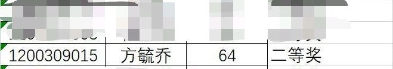
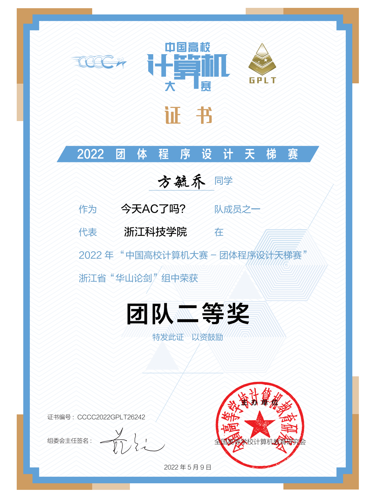
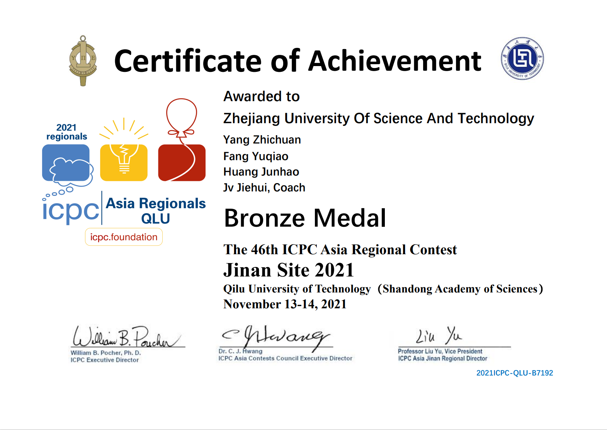
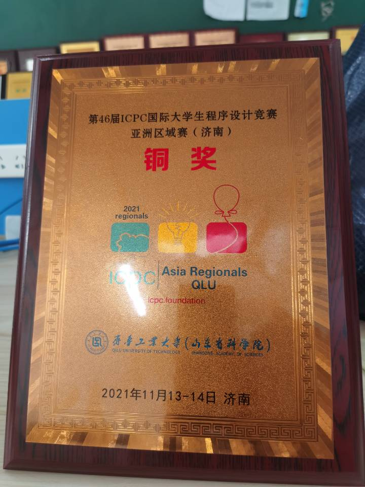
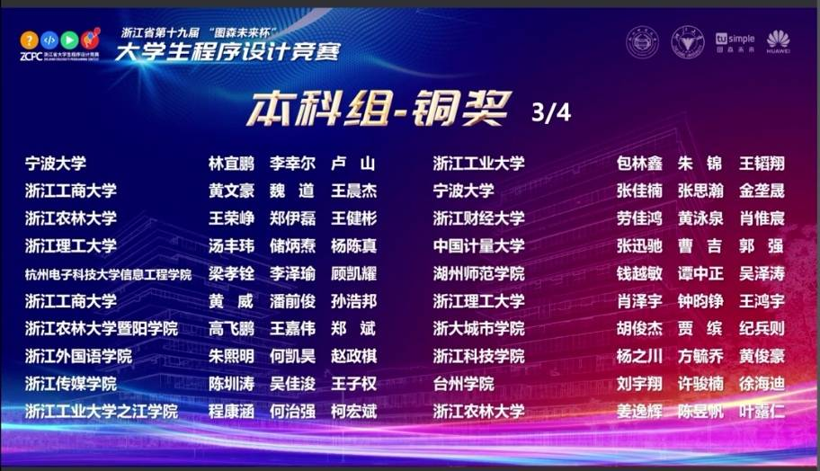
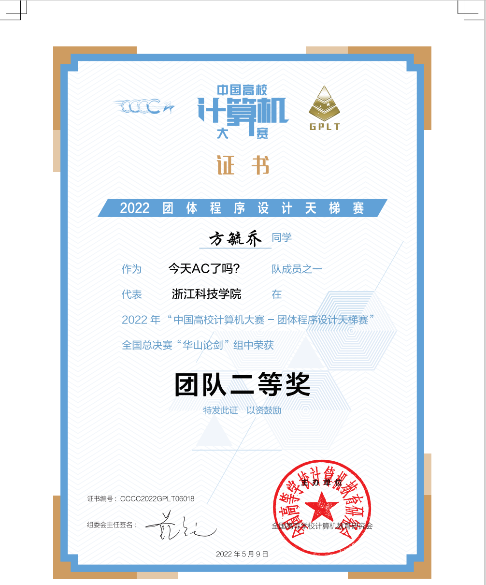
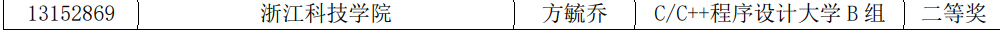
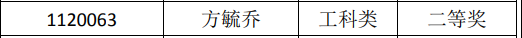
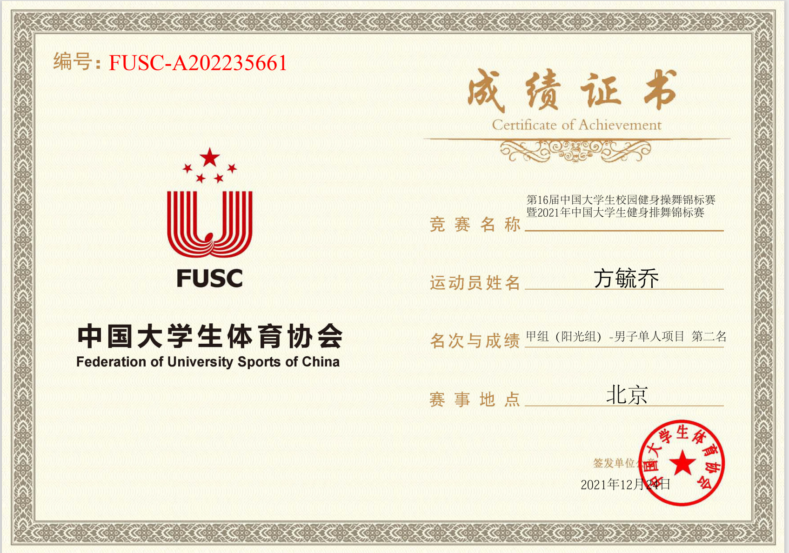
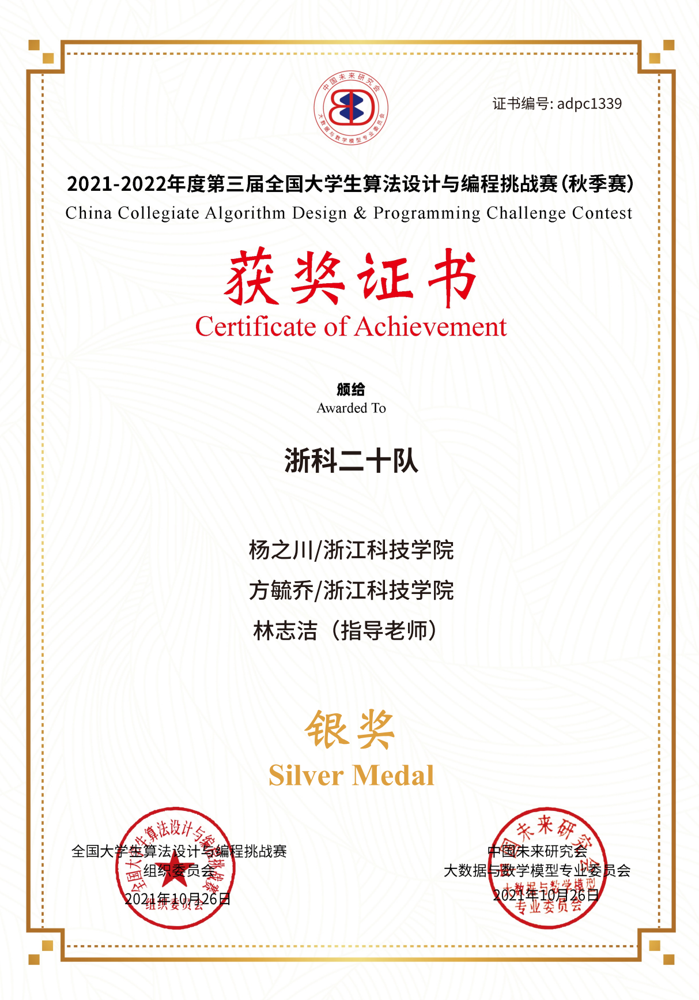

关于我的算法竞赛
高中毕业
七月，高考结束了，填志愿时，看着身边的好友一个个都有了自己的人生目标，有选择当医生的，有选择当警察的……而当时我仍处于迷茫阶段，刷着视频，看着网上说计算机吃香，就抱着试一试的心态填了志愿，但最终由于分数不够，学了自动化，未能进入到本校计算机专业。在暑假时，了解到ACM，又抱着试一试的心态，我加入了。在暑假，简单看了一下C语言语法内容
大一
正式加入ACM协会
本以为加群就是加入协会了，没想到还要面试，仍然记得当时的面试题是用C在一分钟写一遍冒泡或选择排序的基本框架，当时由于紧张，第一遍还码错了，好在第二遍正确，面试后得知这是分最少的加分项，侥幸加入协会
CCCC选拔赛
原定于2020年3月28日举办的第五届团队程序设计天梯赛延期举办，让刚进入大学的我有了报名的希望。给了希望再将其毁灭，这是最可怕的，原以为40人的名额能轻松加入，但学校的选拔赛将我打回了现实，这是我上大学的第一次比赛，当时并没有多少算法知识，甚至连最简单的暴力都打不明白
最终虽然在大一位列二等，由于两位学长的加入被正好被卡在名额之外，虽然有点遗憾，但这确实也是自身实力的不足

组队
结束了平平无奇的大一上，在大一下稍微有了那么一丢丢的沉淀，有机会让新生打区域赛，省赛了，学校要求组队，很幸运遇上了现在的队友——训人一套一套的杨队，以及和我一起被训的俊豪。记得当时还一直推脱谁当队长，现在看来，杨队确实很有当队长的潜质哈哈哈哈哈哈哈哈哈哈嗝。
省赛选拔
第一场组队赛，选拔赛分为三场，按难度占不同比重，每一场均为5小时，赛时遇到许多不会的知识点，这让我们意识到不分工合作是不行的，在激烈的竞争之后，我们队又是卡着最后一名成功入选。
浙江省赛
正式打比赛的当天，是在小和山举行的，起了个大早就赶着校车过去了，比赛前提前体验了一下主校区的美食。由于参赛经验的不足，赛前的环境配置了好久，但好在最后顺利进入了比赛。可能由于队伍名的缘故，当时我们取名——wa的一声哭出了tle，签到的过程中的确遇到了不少tle和wa，就这样不快不慢的过掉了前四题，第五题没理解题意，三个人同时看错题目也是罕见，到了比赛结束我们三人的观点仍然一致，最终过题四题，签到都没签满，成功打铁。看着同去的蒋队他们收获了一枚铜牌，心里酸酸的，但想想还是自己菜就释然了。
成功参赛CCCC
和第一次一样，进行选拔赛，这次我成功入选了，进入了二队，当时的我只能说是稍微有了算法基础，不再像之前只能写写暴力题。
到了正式参赛，成功签完了所有的L1，L2的第一题模拟栈也顺利拿下，但由于当时不会拓扑排序以及对最短路的理解不深刻，L2第二题最长路没有做出，好在队友很给力，最终获得浙江省团队二等奖

蓝桥杯省赛
意外得知蓝桥杯这个比赛，据说获奖很容易，就觉得去试一试，于是报名了学校的选拔赛，圈钱杯就是圈钱杯，一场比赛就要300，但好在我入选了。
蓝桥杯不同于ACM，写完题后无法直接知道是否正确，再加上本身的代码风格并不是很好，最终只是获得了省二等奖，无缘参加国赛。

入选集训队
大一接近尾声，ACM集训队选拔赛如期举办，由于训练并不是很积极，勉强进入集训队，至此，我的大一结束，开始暑假集训。
暑假集训
由于军训，在集训前也没能回家看看，匆忙从安吉赶来小和山，还没熟悉就开始了一个多月的暑假集训。我不知道什么时候开始了解到的Acwing，但时间应该也大差不差了，这对我来说确实是个很好的网站。
暑假一共进行了20场比赛，在当时算法知识匮乏的情况下，可以说我大部分时间都是在罚坐，一遍期待什么时候能变得和学长一样厉害，一遍又疑惑我当时是不是应该选择算法竞赛。幸运的是，最终还是坚持下来了，合计100个小时，在这个暑假，我第一次感觉到算法能力产生质的飞跃，也意识到参加罚坐也是算法比赛的重要组成部分，我真的哭死。
大二
ICPC济南站
在暑假训练之后，部分大三学长退役，原大一大二成了集训队的主力，第一次ICPC济南站选拔赛到来，我们队发挥正常，成功入选。
两题摘铜！！！选对赛站，少打三年说的一点没错。回顾比赛历程，刚开始一小时过了签到，之后三人各开一题开始罚坐，过了半小时，又过了半小时小时，仍然没有思路，看着其他队伍也愁眉不展，我想看来这次又是打铁了。不得不说杨队的睡觉思考真的是很强了，在看似熟睡了一个小时之后，突然想到了DP的优化方案，在我提供一个组合数模板之后就开始码了，过了半小时之后A了，顿时狂喜。最后高斯消元交了十几发也没能过，赛后发现题解确实很巧妙，妥妥的银牌题，至少在当时我是肯定想不到的。不过结果已经很出乎意料了，rk149，成功摘铜。记得在之前杨队说过一定要在大二拿铜，真的就做到了。当时的那场比赛，两题铜，三题银，赛后出题人告知是按WF难度来设置的，这算不算体验了一把WF哈哈哈。


蓝桥杯省赛
2022年4月9日举办了蓝桥杯省赛，以往的暴力杯现在不再是只会暴力就能拿好名次的比赛了，可以发现蓝桥杯的难度在一次次升高，CA组甚至可以算是小区域赛，赛后估分75，最后也是成功获得省一，有了参与国赛的资格
浙江省赛
第二次参加浙江省赛，队伍还是一样的队伍，实力和第一次已经完全不一样了，轻松过了前6题，第7题马拉车板子题，但因为将i抄成了1到比赛结束也没能找出错误，甚至一度以为是板子出了问题，真的是一个字母错失银牌，遗憾摘铜。两场省赛，一次集体看错题目，一次集体没找出错误，可以说真的很奇妙了

ICPC昆明站
在休赛期之后，转去学Linux和Django框架，没怎么碰算法，匆忙康复训练。这是这个赛季的第二次ICPC，妥妥的数学场，在刚开始决策错误，看一道题眼熟就直接开，在一个小时之后仍没去做签到，赛后发现开的是一道金牌题，连签到都没过，可以说很遗憾了，下一场ICPC继续加油吧。
CCCC天梯赛
2022年4月23日举办了天梯赛，最后由于输入输出流的缘故没能开L2后几题，没拿到个人奖，好在团队给力，获得团队国二和省二，下次继续加油吧

蓝桥杯国赛
蓝桥杯国赛于2022年6月18日举行，刚开始第一道填空就难住了，挂后台跑十几分钟也没能跑出来，赛后才知道是DP+int128，倍增也忘记了，好在会一道20分概率题，赛后发现两个填空都错了，最后估分60，获国二

关于我不训练在干啥
高数竞赛

排舞

算法设计与编程挑战赛
